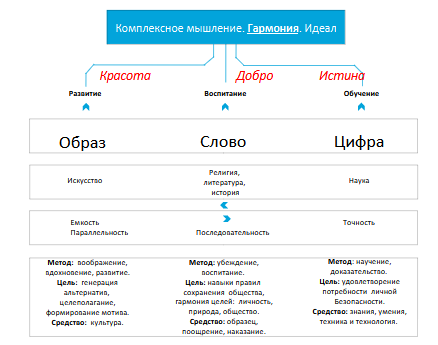
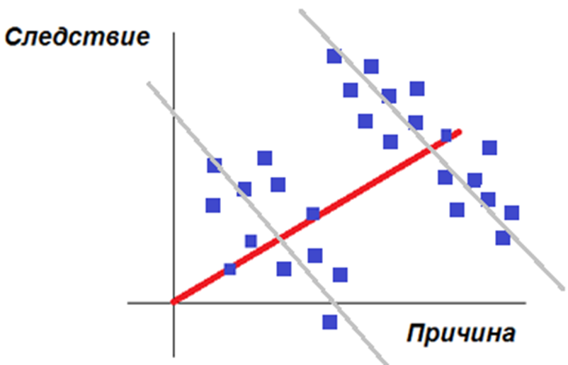
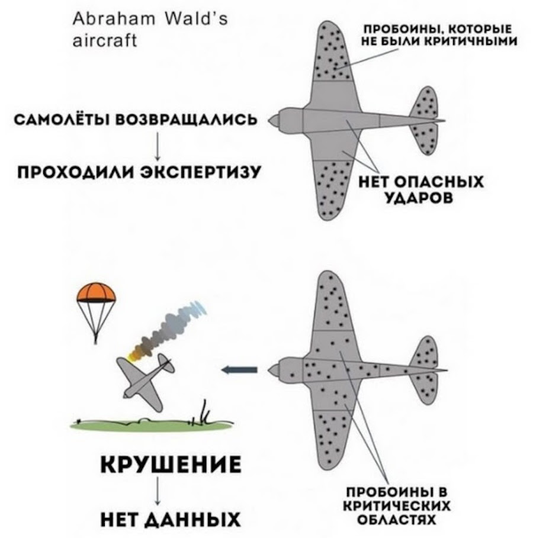

|
Лекция 01.
|
| Неспособность человека, слабость, ущербность, немощь | Сказочный предмет, решающий проблему | Сказка | Технические устройства (усилитель) — по возрастанию КПД |
|---|---|---|---|
| Человек медленно передвигается в пространстве | Сапоги-скороходы | Мальчик-с-пальчик | Пружинящие ходули, велосипед, конка, автомобиль, поезд |
| … | … | … | … |
Состав системы искусственного интеллекта. Три типа мышления
Как известно, автоматизировать можно только то, что сам знаешь. Например, надо сначала понять, как работает бухгалтер, что такое дебит, кредит, сальдо, красная линия и только потом писать программу, которая заменит бухгалтера. Значит, чтобы написать программу под названием «Искусственный интеллект», надо понять, как думает, как принимает решения, как действует человек. А вот с этим пока все плохо, гуманитарные науки не дали нам ни модели человека, ни модели мышления. Доказать это просто – достаточно взять то, что называется такой моделью, и по ней рассчитать будущее поведение описываемого объекта. Если прогноз реализовался точно, то наука о человеке есть, если не получилось – то нет.
В этой ситуации инженеры, программисты и системотехники придумали оригинальный способ. Поскольку человек сам образовался в итоге эволюции, то и программа ИИ должна себя создать сама.
Из этого очевидно, что в системе ИИ должны присутствовать подсистемы обучения, самовоспроизведения и саморазвития, подсистемы языкового общения с миром, построения понятий и выявления связей между ними (классификация), подсистема думания, подсистема примитивных реакций.
Как видите непонятное слово «интеллект» заменено на такие же непонятные слова как «думание», «обучение», «общение», «мир» и так далее. И этот список далеко не полон. Более того каждая подсистема нуждается в дальнейшей детализации. Например, язык подразумевает, что общаться с системой можно на цифровом языке (числа), образном (изображения), вербальном (слова). (рис. 1.3.)

Рисунок 1.3. - Структура комплексного мышления
На языке цифр общаются ученые, инженеры, так как на нем удобнее строить доказательства и выражать объективные знания, познавать и передавать истину, он точен. Это язык природы, науки, которая ее описывает, исследования и научения, логики. Это самый молодой язык. Пифагор утверждал, что мир состоит из чисел: у каждой вещи есть свое число, и даже может быть не одно, потому что у элементов вещей тоже есть свои числа.
На языке слов базируется воспитание, передаются традиции от общества к человеку. Язык является носителем убеждений, веры. В идеале целью этого языка является привнесение в мир добра. Им пользуется религия, литература, история и такая дисциплина как этика. Вербальные сообщения медленные, слова поступают в мозг последовательно, одно за другим.
Образами мыслит художник, занимающийся искусством. Язык воображения очень емкий, гибкий, за одним образом стоит много смыслов, он удобен там, где надо воспринимать информацию сразу целиком, одномоментно, параллельно во всех ее проявлениях. Озарение, мгновенная способность сообразить, инсайд относятся к языку воображения. Языком образов с нами говорит красота. Это самый древний из типов мышления. Известны изображения, датированные 18 000 лет до нашей эры. Языком образов пользуется дисциплина эстетика.
Заданиe
- Постройте в виде графа в своей тетради систему, объединяющую три типа мышления: цифровое, вербальное и образное. Сравните их, указав свойства, а также их сходства и различия.
Тест на интеллектуальность
Однако, как же понять, интеллектуальный перед нами субъект или нет. Предлагаю провести вам тест. Дайте прочесть своим друзьям некий текст, например, сказку «Красная Шапочка». Теперь задайте вопросы по тексту: «Куда пошла КШ? Где была КШ между 10 и 11 утра? Почему надо было идти? Если бы мама пошла вместе с КШ, то как бы развивались события? Права ли мама, послав маленькую девочку через опасный лес?»
Если на заданные вопросы ваш коллега дает адекватные ответы, соотносящиеся с текстом сказки, то можно сказать, что он построил в своей голове модель сказки и может ею пользоваться для решения задач, то есть вычисления ответов на вопросы.
Важно также, чтобы ответы на одинаковые вопросы примерно совпадали у большинства участников эксперимента. Это говорит о том, что и сам текст имеет смысл, и его модели, построенные в мозге, тоже отражают этот же смысл, поскольку подобны этому тексту.
Разумеется, можно найти ответ на вопрос «Куда пошла КШ?» непосредственно прямо в тексте сказки, не обладая интеллектом. - «К бабушке», «В лес». Это вопросы первого уровня. Но, чтобы ответить даже на вопрос второго уровня, потребуется понимание смысла, построение модели сказки в мозге субъекта и соотнесение ее с более ранним жизненным опытом. «Где была КШ с 10 до 11 утра?» Ответа на этот вопрос просто так в тексте не найти, вычисление ответа требует рассуждений и дополнительных знаний, например, о скорости движения человека в лесу.
Самые сложные вопросы – это вопросы пятого уровня, касающиеся морали: «Зачем мама отправила КШ в опасный лес? Можно ли пожертвовать одним человеком ради спасения другого? Кем именно? Можно ли пожертвовать ради одного несколькими другими людьми? Кем (возраст, опыт, профессия)?» Здесь потребуется знание общественных традиций и прогноз развития общества в целом, складывающийся из истории, литературы, социальных отношений.
Задания
- Выпишите в тетрадь все вопросительные слова русского языка. Сколько их? Распределите вопросы по типам.
- Выберите текст. Поставьте к прочитанному тексту по 3 вопроса каждого типа. Ответьте на них. Сравните свои ответы с ответами ваших товарищей. Оцените расхождение между ответами двух ваших товарищей по десятибалльной шкале (0 – полное совпадение), проверив все возможные пары. Найдите сумму расхождений от каждого до остальных. Найдите медианного учащегося, чье расхождение минимально по отношению к остальным. Постройте граф учащихся, указав расстояния между ответами всех пар учащихся. Расставьте вершины графа таким образом, чтобы в центре графа был медианный учащийся, ближе к нему учащиеся с наименьшим расхождением к медианному. А самые несогласные расположились бы ближе к периферии, но при этом оставались поблизости от тех, с кем они имеют наименьшие расхождения.
- На сайте, прочитав инструкцию, выполните упражнение «Построение модели сказки». По образцу модели сказки про Красную Шапочку постройте математическую модель своей сказки. Поставьте вопрос к сказке и вычислите ответ на него. Правила преобразования логических выражений находятся в инструкции на сайте.
- Поговорите с ботом на тему прочитанного вами и им текста. Задайте ему вопросы разного типа относительно данного текста. Оцените насколько бот адекватно отвечает на ваши вопросы.
Примеры интеллектуальных систем
Существуют ли уже примеры интеллектуальных систем? - Несомненно. Вирусы, ССМ, ГТР, ТАС.
Компьютерный вирус может перепрограммировать другую программу, вынудив ее выполнять нужную ему функцию. Значит, он «умнее» такой программы. Он увеличил свое кпд не за счет своих усилий, а привлечения себе на службу чужой энергии, перенаправил ее действия в нужном для себя направлении. «Ум» поставил на службу себе чужой «ум». Но для этого он должен быть «умнее».
Текстово аналитические системы (ТАС) умеют отвечать на вопросы по введенному в них тексту. Сделают аннотацию текста в заданном объеме. Такие системы хороши в разведке, если необходимо, не сходя с места получить сведения о некоторых объектах в другой стране. По косвенной информации, сопоставляя множество разрозненных фактов из интернета, можно добыть нужные секретные сведения. О мощности военного предприятия можно догадаться по количеству потребляемого электричества, номенклатуре ввозимого сырья, диаметру канализационных труб, а чеки магазинов расскажут о благополучии его сотрудников и тому подобное.
Генераторы технических решений (ГТР) помогают инженеру решить поставленную перед ним трудную проблему - подобрать нужные явления среди описанных в справочнике, вставить в цепочку, которая преобразует сырьё в результат, недостающие законы. Основой таких систем является технология ТРИЗ (автор Г.С. Альтшуллер). Технология основана на анализе множества уже известных изобретений и выявления в них некоторого сходства, что позволяет выделить типовые приемы решения проблем (Фонд эвристических приемов). В неё также входит фонд физических эффектов, в котором перечислены связанные известными нам законами (закон Гука, закон Ома, эффект Вавилова – Черенкова и так далее) физические величины (сила, ускорение, перемещение, упругость, проводимость, поток и тому подобное), что позволяет формально подобрать нужные преобразования одних величин в другие, выстроить цепочку законов и элементарных устройств в изобретаемой машине. И наконец, алгоритм изобретения (АЛРИЗ) – последовательность вопросов и применяемых инструментов для поиска ответов на них. Технология решения изобретательских задач (ТРИЗ) широко распространена и используется в инженерном мире.
Системы ситуационного моделирования (ССМ) содержат в себе множество отдельных связей между весьма отдаленными, а иногда и неформальными величинами, замеченными частным образом (например, замечено, что наличие флота положительно влияет на настроение населения во время военных действий с коэффициентом 1.05). Многократное пропускание гипотетических сигналов через сеть таких связей позволяет получить интересные выводы о скрытых в недрах системы устойчивых свойствах, найти способы повышения эффективности работы сложных систем.
Например, можно ли отдать все имеющиеся налоговые поступления пенсионерам? - Хорошее дело. Но не окажется ли так, что недофинансированной областью окажется медицина, экология, благоустройство, содержание городской инфраструктуры. А бабушки будут закармливать своих внуков сверх меры шоколадом и заваливать в избытке, а потому ненужными, игрушками. Что лучше - выдать пенсию лекарствами или деньгами, на которые можно купить или лекарства, или игрушку внуку. Часто пенсионер решает, что «лекарства могут подождать», внуки важнее. Так что монетизация льгот - спорное дело. Сделаем наоборот, обеспечим всем пенсионерам бесплатный проезд на метро. Но в глухой деревне нет метро, и субсидия для такого гражданина пропадет, он недополучит свой кусочек общих благ. Можно передать все деньги на ликвидацию помоек, которых много вокруг каждого города и которые являются для него рассадником грызунов и болезней. Или может быть лучше увеличить количество койко-мест в больницах, увеличить зарплату врачам, которые будут бороться с инфекциями? Здесь тоже не всё так здорово, как кажется сначала, – ведь больницы не санатории, в них надо содержать только тех больных и столько времени, которое необходимо для операционного лечения, простой высококвалифицированного хирурга у постели больного вряд ли оправдан. Если есть возможность, то больному лучше находиться дома, принимая лекарства, которые он в состоянии выпить самостоятельно. Но как быть с капельницей, которую ставит медицинская сестра, перемещаясь по городу в транспортных пробках от одного больного к другому. Вроде бы логично содержать таких больных в одном месте. Все это сложные вопросы, которые нуждаются в модели и поиске оптимального управления на такой модели. Поэтому ССМ – очень полезная штука.
Надо понимать, что все перечисленные системы не универсальны. Делая неплохо что-то одно, эти системы совершенно беспомощны в других аспектах. Такой интеллект называют слабым ИИ. Мечтой человечества является сильный ИИ, который одинаково хорошо проявит свою силу в самых разных областях.
Второй важнейший вопрос. Понятно, что нас интересует не любое попавшееся, а оптимальное решение. Но на каком горизонте оно принято – оптимально ли оно с точки зрения сегодняшнего дня, или с учетом последствий, которые наступят через год, через сто лет? Это решение учитывает только ваши интересы, или всей вашей семьи, или страны, или человечества? Насколько учитывает предлагаемое решение последствия, которые могут произойти в соседних областях знания? Охват горизонта событий, пространства последствий – показатель интеллектуальности.
И как всегда зададимся вопросом, а есть ли такой человек, который послужит образцом для подражания при постройке сильного ИИ? – Нет! Каждый из нас тоже силен только в какой-то одной определенной области, иногда двух-трех: шахматы, лыжный слалом, химия, вождение автомобиля, кулинария, математика, танцы. И как же в этом случае быть? Ответ простой. У ИИ должен быть разъем, через который бы подключался картридж с уже известными нам моделями определенной предметной области или несколько картриджей.
Задание
- Загрузите с сайта ССМ с моделью городского района, чей глава должен принять решение о распределении денежных средств в различные отрасли городского хозяйства. Попробуйте, меняя распределение денежных средств, добиться приемлемого решения, устраивающего всех. Сравните решения, которые получились у ваших одноклассников, у кого район развивался быстрее? В чем, по-вашему, состоит понятие «лучше» для района?
Модель и данные
Итак, мы подошли к основному вопросу: «Что такое модель? Почему понятие «модель» – это то, главное, что должен строить и использовать ИИ?»
Допустим вас интересуют некоторые факты. Например, меняя напряжение в электрической цепи, вы измеряете ток. Пусть вы проделали 5 экспериментов с результатами (U,I): (10,5), (20,10), (6,3), (2,1), (14,7).
Можете ли вы в дальнейшем предсказать на основе этих данных значение тока I при напряжении U=8? Думаю, что нет, такого эксперимента не было. И таблицу значений токов при всех возможных значениях напряжений составить невозможно, так как их бесконечное количество. Зная, когда с автовокзала отходит на дачу первый утренний автобус, нельзя предсказать, когда пойдет второй или последний. Данные не могут породить новые данные.
Георг Ом, проведя несколько экспериментов с электрическим током, отметил точки с парой координат (U,I) на графике в осях U и I. Точки, представляющие числовыми координатами данные, визуально выстроились в ряд. Это позволило ему выдвинуть гипотезу о линейной зависимости между величинами напряжения и тока. Осталось только подобрать нужный параметр линейной функции: I=g*U или более привычно в виде школьной записи: I=U/R. Коэффициент g был подобран, например, в нашем случае g=0.5 (или R=2).
Обратите внимание, после построения зависимости ситуация резко изменилась. Зная закон связи U и I, а это именно закон, выраженный уравнением, можно предсказывать все новые и новые данные, уже не проводя экспериментов. То есть на основе экспериментальных данных была построена модель, отражающая в виде уравнения причинно-следственную связь величин. Где знак «=» можно прочитать как «если…, то…»: если на концы металлического проводника подать разность потенциалов, называемую напряжением, то в проводнике возникнет направленное движение заряженных частиц, называемое электрическим током. Причина – напряжение U, следствие – ток I, а коэффициент пропорциональности g задает количественное соответствие между ними. Перейдя от арифметических данных к алгебраическим конструкциям, мы получили возможность предсказывать новые, ранее неизвестные нам данные.
Переход от данных к модели произошел благодаря обобщению. Теперь будем считать, что между достоверно снятыми экспериментальными точками и даже за их пределами объект ведет себя аналогично. И так будет до тех пор, пока кто-то не докажет (или не обнаружит) обратное (а такое возможно).
«Найти конечное в бесконечном» - слова о моделях Д.И. Менделеева. Одно уравнение описывает бесконечное число фактов. Удобно.
Модели полезны, так как они:
- экономят наши средства (лучше рассчитать заранее на бумаге размеры и материал опор моста, чем строить наобум и тратить средства на строительство моста, который потом обрушится),
- повышают безопасность (лучше на Луну запустить модель человека, Луноход, чем рисковать жизнью космонавта),
- помогают там, где масштаб времени или пространства не позволяет провести непосредственный эксперимент (микромир, звездообразование, расчет динамики взрыва, расчет старения рельсов железной дороги).
Также модели полезны, если эксперимент вовсе невозможен (при проектировании будущей системы, то есть пока несуществующего объекта), ненагляден (электромагнитные поля, элементарные частицы, работа мозга, химическая реакция), неповторим (медицина, история, про которую говорят, что «нельзя в одну и ту же реку войти дважды»). В целях безопасности модели широко используют как тренажеры летчиков, машинистов, операторов сложных систем. Во всех этих случаях реальный эксперимент заменяют на виртуальный: мысленный, на бумаге или в компьютере.
Модель требуется для уяснения сути сложного явления, для его понимания, систематизации наших знаний. Модель вообще важнейшее изобретение нашего мозга, по сути это и есть знание, модель — это носитель смысла. Недаром философы говорят, что модель играет смыслообразующую и системообразующую роль в научном познании. Думать, это прежде всего мысленно моделировать последствия своих будущих поступков, проигрывать их в голове на основе прежнего опыта, избегать возможных неприятностей, выбирать лучшие решения для реализации, достигать пользы с меньшими затратами, то есть сохранять жизнь и развиваться, а, значит, уменьшать риски. Модель приводит множество фактов в единую систему, позволяя строить причинно-следственные связи, понимать мир как единое целое, знать, что к чему приведет.
Такова миссия науки – экономя средства, время и усилия, достигать новых достоверных результатов, обеспечивать безопасность свою и окружающих, приносить пользу через понимание закономерностей окружающего нас мира, повышать кпд нашего существования.
Главное преимущество в использовании модели по сравнению с данными – возможность прогноза, предсказание неизвестного.
Подчеркнем соотношение между моделями и данными. Модель строят на основе известных данных, а построенная модель может предсказывать новые неизвестные данные. Модель на входе получает данные X и на её выходе получаются новые данные Y. Модели преобразуют данные Х в данные Y. А сами модели преобразуются с помощью правил и законов алгебры. Данные, модели, алгебры – это все информация, но разного качества.
Работу с данными обеспечивают информационные технологии первого уровня - базы данных, музыкальный, графический, файловый, текстовый редакторы. Работу с моделями обеспечивают информационные технологии второго уровня (решатели задач) – системы моделирования, языки программирования, математические пакеты. С данными работает арифметика, с моделями работает алгебра.
Так же как модели преобразуют одни данные в другие, преобразовывать модели из одной формы в другую им эквивалентную форму нам помогает алгебра, то есть правила работы со знаками, переменными, буквами. Алгебра работает с элементами (переменными), связями (действиями, операциями – сложить, вычесть, умножить, разделить) и причинно-следственными отношениями (знаками больше-меньше, уравнивания, тождества, эквивалентности). Алгебра – это основа информационной технологии третьего уровня. Алгебры бывают разные, в зависимости от заложенных в них алгебраических законов, которые соответствуют конкретной предметной области. На четвертом уровне информационных технологий создаются сами алгебры посредством наделения их определенными законами.
Задания
- Загрузите с сайта задачу о погоне. Изучите на компьютерной модели условия, при которых волк может догнать зайца. А при каких условиях ему вовсе не стоит даже пытаться это делать. Постройте в тетради график, предсказывающий результат от исходных условий.
- Загрузите с сайта задачу «Военная логистика». Изучите на компьютерной модели условия, при которых имеет смысл идти в военный поход. Постройте в тетради график, предсказывающий результат похода в зависимости от исходных условий.
Первый важнейший пример
Итак, основой ИИ является его способность обобщать, то есть из фактов (данных) выводить общие закономерности (модели): Y = F(X). Например, у меня в телефонном справочнике есть 100 номеров Y моих друзей и их фамилий X. Можно ли по фамилии нового 101-го друга спрогнозировать его телефонный номер? – В это трудно поверить. Видимо, нет. Потому что данные не могут породить новые данные. Однако, ИИ может найти закономерность F между X и Y, если, конечно, она там есть.
Этот пример не шутка, это действительно так. Другое дело, что закономерности F могут быть простыми, сложными и очень сложными. Простые, как мы увидим, представляют собой короткие записи законов для очень большого множества данных Х (их называют элементарными законами).
Самый простой закон содержит одно действие, три величины и одно отношение.
Например:
- F = kx,
- I = U / R,
- F = ma.
Попробуйте убрать что-то отсюда. Вряд ли можно получить закон проще.
Сложные закономерности содержат более длинные записи F. Очень сложные по длине F практически будут соответствовать длине записи множества X. В пределе, при отсутствии закономерности, модель может стать данными. Напомним, что функцию в математике могут задавать алгебраической записью, графиком, а могут таблицей её значений. Конечно, если возможно, предпочтительны более краткие записи законов. Самые фундаментальные законы, которые описывают единообразно множество фактов, – краткие.
Недостатки научного подхода
Только что мы описали очень удобное изобретение интеллекта – способность извлекать закономерность из фактов, записывать её в виде закона. Обобщение, переход от частного к общему – вполне научный метод. В явном виде его впервые описал Фрэнсис Бэкон в книге «Новый Органон» в 1620 году, которая является основанием индуктивной методологии научного исследования, часто называемой методом Бэкона и ставшей предшественником научного метода. Индукция получает знание из окружающего мира через эксперимент, наблюдение и проверку гипотез.
Однако метод обобщения может ошибаться или допускать неточности при описании изучаемых явлений, поэтому его следует использовать аккуратно.
- Проводя эксперименты с алкоголем, можно заметить,
что: вода + водка = алкоголь, вода + виски = алкоголь, вода + коньяк = алкоголь, вода + джин = алкоголь.
Откуда следует общий вывод, что именно «ВОДА придает всем другим жидкостям свойство алкоголя».
Но это ошибка, замеченная еще Азиком Азимовым! Почему она произошла? Просто в экспериментальную базу не попал случай «молоко + вода» или «бензин + вода», который разрушил бы намечающийся здесь закон.
Запомните: никакое количество подтверждающих закон фактов не гарантирует его истинности, но всего один контрпример способен его опровергнуть. - Взгляните на (граф. 1.1.). Попытка формально вычислить закономерность среди экспериментальных точек приведет компьютер к виду закона,
указанного красным цветом. Однако достаточно взгляда обычного человека, чтобы понять, что речь идет о двух разных обратных зависимостях.

График 1.1. - График зависимости следствия от причины
Формальный подход снова потерпел поражение в руках тех, кто его неправильно использует. - При автоматическом поиске зависимостей, описывающих общественные отношения, на основе огромных баз данных
со множеством величин компьютер нашел, что между потреблением маргарина и количеством утонувших в городских бассейнах есть прямая связь.
Но есть ли здесь действительно причинно-следственная связь? Ведь маргарин не может привести к утоплению.
На самом деле с ростом населения города растет как потребление маргарина, так и количество несчастных случаев.
И это создает иллюзию причины и следствия между первым и вторым. - Во время второй мировой войны на аэродромах Великобритании на летательных аппаратах внимательно изучали места повреждений, полученные ими в бою. Откуда был сделан неверный вывод, что защищать следует те места самолета, на которых было больше всего видимых пробоин.
Однако поступить надо было ровно наоборот, так как изучению подвергались только те аппараты, которые уцелели в бою, и несмотря на полученные повреждения,
дотянули всё-таки до аэродромов и приземлились. Это значит, что рассматриваемые отверстия говорили о том, какие попадания переносятся относительно
безболезненно. А погибшие и недолетевшие до аэродрома самолеты с повреждением двигателей и топливных баков совсем не были учтены.
Смотри (рис. 1.4.) - «Ошибка выжившего» Абрахама Вальда, США - Вряд ли согласно полученному закону Ома I = U / R при R = 1 Ом и при U = 106 В стоит ожидать I = 106 А. Во всяком случае эксперимент на домашнем телевизоре это вряд подтвердит. Обобщение имеет свои границы, которые надо представлять и соблюдать. А.Эйнштейн не опроверг формулы И.Ньютона, но теория относительности при рассмотрении движений объектов на очень больших скоростях v, близких к скорости света c, потребовала уточнения классической модели сомножителем √(1-v2/c2).

Чтобы бороться с такими обобщениями, строящимися машиной, у гражданина есть право на забвение, согласно которому каждый из нас может потребовать удалить из общего доступа свои персональные данные, которые устарели, неуместны, неполны, неточны, избыточны или ведут к ложным выводам (статья 10.3 Федерального закона № 149-ФЗ «Об информации, информационных технологиях и о защите информации»).
Второй важнейший пример
Если модель в мозге организма не настроена и законы ее функционирования не соответствуют законам окружающего мира, неправильные, то существо действует неверно,
промахивается, получает штраф от среды, испытывает боль.
Например, двигаясь в дверной проём, человек стукается о косяк в следствии неправильной настройки
нейронной сети мозга, анализирующей изображение комнаты и регулирующей работу наших мышц. Боль – сигнал к перестройке модели в мозге.
Правильно настроенная модель отражает законы окружающего мира и не промахивается, получает поощрения. То есть законы мира отражаются в виде уравнений модели
в нейронах нашего мозга.
У простейших существ (ящерица, лягушка, рыба) мозг мал и они используют немногие частные случаи, как примеры удачного поведения. Однако все случаи учесть невозможно и с ростом сложности мира и развитости мозга высшие организмы строят всё более общие правила и законы. Мозг – зеркало мира. Модель – отражение мира в зеркале мозга и система, отражающая его законы. Носителем модели служит сеть (система!!!) из нейронов. В последствии мы разберем, что одиночный нейрон – простейшая нелинейная многомерная функция, а нейронная сеть – система уравнений, имитирующая законы окружающего нас мира, сложность которой пытается приблизиться к сложности мира, стать подобной ей.
Почему сейчас?
Почему сейчас так остро встал вопрос о построении ИИ? Развитие материи идет в направлении использования всё большей энергии как с точки зрения её количества, так и с точки зрения эффективности её использования. Если параллельно развивается несколько систем, то рано или поздно из-за их неравенства в развитии возникает вопрос подчинения с целью перехвата чужой энергии у более слабой системы. Такое резкое повышение собственного кпд у сильной системы намного выгоднее её постепенного развития.
«Если кто-то сможет обеспечить монополию в сфере искусственного интеллекта, то последствия нам всем понятны – тот станет властелином мира» - В.В. Путин, Президент РФ
По словам главы государства механизмы ИИ обеспечивают быстрое принятие оптимальных решений, анализируя огромные объемы информации. Это дает «колоссальные преимущества в качестве и результативности».
«Кто лучше использует мощный технологический потенциал в интересах людей, их благополучия, тот и в современном мире выигрывает. Выигрывает в глобальной конкуренции. И мы обязательно должны быть здесь среди лидеров …».
Развитие усилителей от первобытного рубила, первых ткацких станков до конвейеров, ракет, атомных реакторов, а также плотность, сложность и противоречивость связей в человеческом обществе требует гигантской информационной машины, которая координирует точно и быстро все эти материальные, энергетические, социальные процессы, то есть сети компьютеров. Первый проект компьютерной сети представил советский инженер Анатолий Китов в 1959 году, а первую сеть ARPANET запустили в конце 60-х годов в США.
Задача ИИ как можно быстрее и точнее собрать факты о сложном быстроменяющемся мире, построить модель современного мира, поставить и решить в своих интересах задачу управления миром.
Почему иногда в выигрыше оказывается спортсмен, а иногда ученый? Ученый, возможно, примет более точное и взвешенное решение, но на его поиск уйдёт много времени. Спортсмен реагирует быстрее, но, возможно, хуже. ИИ должен совместить точность и скорость принятия решений.
Сделаем вывод: ИИ – сверхбыстрый адаптер. Выигрывает тот, кто примет быстрее решение и точнее, адекватнее представляет мир и процесс его изменения. При реализации решения имеет преимущество тот, кто имеет в своем распоряжении бОльшие запасы энергии, одномоментно генерирует более мощный поток энергии, обеспечивает лучшее значение кпд своей деятельности.
Презентация:
Видео:
| О руководителе курса «Искусственный интеллект» | Лекция 02. Компьютерная графика и геометрия, изображая и измеряя многомерное пространство | ||||||||||||||||
|
|||||||||||||||||